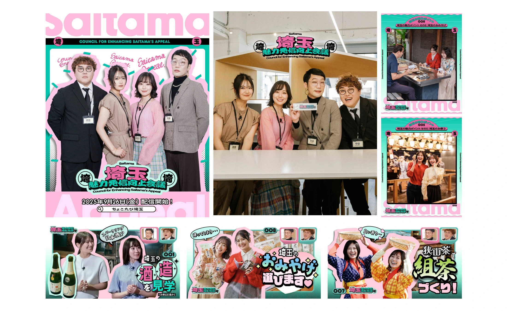

観光 / 埼玉
ちょこたび観光プロモーション


埼玉県物産観光協会による観光プロモーション「ちょこたび埼玉」。2025年秋からは、県内をめぐるYouTube番組「埼玉魅力発信向上会議」で、観光やグルメの魅力を届けています。
01 / 背景とテーマ
輪郭を与える
近場だからこそ素通りされてしまう。埼玉の観光が抱えるその構造に対して、「ちょこっと出かける」という距離感の言葉を置き、県内をめぐる理由をつくるプロモーションです。
02 / SCHEMAの担当範囲
全体を整える
SCHEMAはプロモーション全体の企画と制作を担当。テーマごとに分かれた複数のランディングページと、それらを横断する企画を通しで設計し、ひとつの旅の入口としてまとめています。
03 / 取り組みの視点
枠組みをひらく
観光地を紹介するのではなく、行きたくなる切り口から入る。YouTube番組の企画など、届け方そのものを広げながら、埼玉に出かける動機を育てています。
2025年9月に公開が始まった「埼玉魅力発信向上会議」は、清宮レイさんとおでかけクリエイターの大迫瑞季さんが県内で旅ロケに挑み、その映像を見ながら、会長の平井まさあきさん（男性ブランコ）、副会長の中谷祐太さん（マユリカ）と魅力の伝え方を会議形式で考える番組です。第1回は深谷市の滝澤酒造を訪ねる「日本酒」回。うどん、花、渋沢栄一、お祭り、宿泊、いちご、お土産、狭山茶と、全8回で埼玉をめぐります。